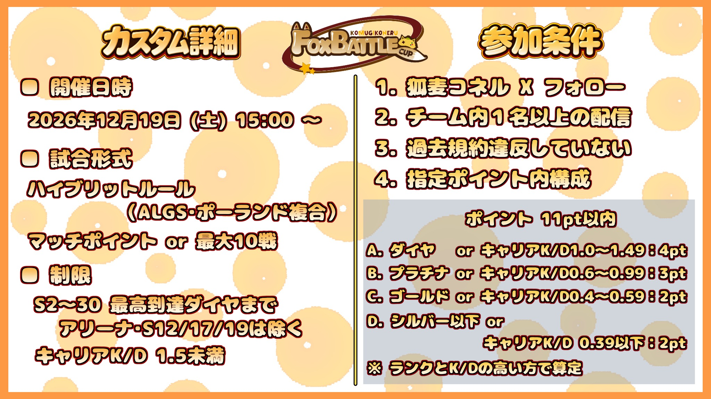

ハイブリッドルール
ALGS・ポーランド複合
マッチポイント または 最大10戦
大会の勝敗判定方式は、当日の運営案内も確認してください。
ダイヤ以下限定 APEX LEGENDS カスタム
大会概要・試合形式・参加条件をこちらで確認できます。参加を希望するチームは、エントリー前に必ず内容をお読みください。
15:00〜21:00（予定）
Apex Legends カスタム
参加予定人数
FoxBattleCup Vol.4の開催情報
15:00〜21:00（予定）
オンライン開催
チーム制のカスタム大会
ALGS・ポーランド複合
添付の大会概要画像に記載されたルールを掲載
ALGS・ポーランド複合
大会の勝敗判定方式は、当日の運営案内も確認してください。
エントリー前に、以下の4項目を確認してください。
主催アカウントのフォローが必要です。
チームから1名以上が大会を配信してください。
過去の大会規約違反がないことが条件です。
下記のポイントを合計して11pt以内に収めてください。
ランクとキャリアK/Dの高い方のポイントで選手ごとに算定します。
| 区分 | 最高到達ランク または キャリアK/D | ポイント |
|---|---|---|
| A | ダイヤ OR キャリアK/D 1.0〜1.49 | 4 pt |
| B | プラチナ OR キャリアK/D 0.6〜0.99 | 3 pt |
| C | ゴールド OR キャリアK/D 0.4〜0.59 | 2 pt |
| D | シルバー以下 OR キャリアK/D 0.39以下 | 2 pt |
算定方法：ランクとK/Dの両方を確認し、より高い方のポイントを適用します。ランクの判定対象外シーズンは上記の参加制限を確認してください。
元の案内画像はこちらから確認できます。

大会条件を確認してから、フォームよりお申し込みください。案内や最新情報は主催者のXもご確認ください。